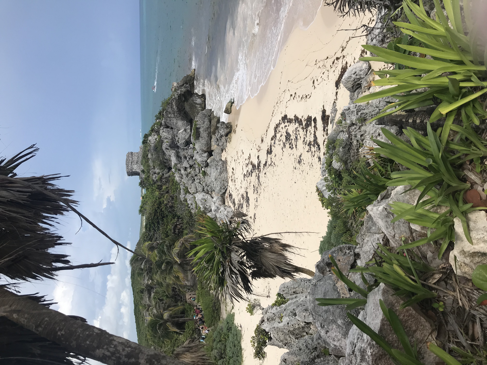

Exploring Latin America

The content for Latin America in the 6th grade World Geography curriculum can be summarized in
four categories:
- Latin America's Geography
- Latin America's History and Culture
- Latin American Governments
- Latin American Economics
Refer to the table and they key below, or refer to the Georgia Standards of Excellence (GSE) to select the standard
you will be teaching:
| Geography |
History and Culture |
Government |
Economics |
| SS6G1 |
SS6H1 |
SS6CG1 |
SS6E1 |
| SS6G2 |
|
|
SS6E2 |
| SS6G3 |
|
|
SS6E3 |
SS6G1- Locate selected features of Latin America.
- Locate on a world and regional political-physical map:
Amazon River, Amazon Rainforest, Caribbean Sea, Gulf of Mexico, Atlantic Ocean, Pacific Ocean,
Panama Canal, Andes Mountains, Sierra Madre Mountains, and Atacama Desert.
- Locate on a world and regional political-physical map the countries of Brazil, Chile,
Colombia, Cuba, Mexico, and Panama.
SS6G2- Explain the impact of environmental issues in Latin America.
- Explain the causes and effects of air pollution in Mexico City, Mexico.
- Explain the environmental issue of destruction of the rain forest in Brazil.
SS6G3- Explain the impact of location, climate, distribution of natural resources, and population distribution on Latin America.
- Explain how the location, climate, and distribution of natural resources impact trade and affect where people live in Mexico, Brazil, and Cuba.
SS6H1- Explain conflict and change in Latin America.
- Describe the influence of African slavery on the development of the Americas.
- Describe the influence of the Spanish and the Portuguese on the language and religions of Latin America.
- Explain the impact of the Cuban Revolution and describe the current relationship between Cuba and the United States.
- Explain the impact of poverty, the war on drugs, and migration to the United States on Latin America.
SS6CG1- Compare and contrast various forms of government.
- Explain citizen participation in autocratic, and democratic governments. [i.e. the role of citizens in choosing
the leaders of Mexico (presidential democracy), Cuba (autocratic), and Brazil (presidential democracy)].
- Describe the two predominant forms of democratic governments: parliamentary and presidential.
SS6E1- Analyze different economic systems.
- Compare how traditional, command, and market economies answer the economic questions of 1-what to produce, 2-how to produce, and 3-for whom to produce.
- Explain that countries have a mixed economic system located on a continuum between pure market and pure command.
- Compare and contrast the basic types of economic systems found in Mexico, Cuba, and Brazil.
SS6E2- Give examples of of how voluntary trade benefits buyers and sellers in Latin America.
- Explain how specialization encourages trade between countries.
- Compare and contrast different types of trade barriers, such as tariffs, quotas, and embargos.
- Explain why international trade requires a system for exchanging currencies between nations.
- Explain the functions of the United States-Mexico-Canada Agreement (USMCA).
SS6E3- Describe factors that influence economic growth and examine their presence or absence in Brazil, Cuba, and Mexico.
- Evaluate how literacy rates affect the standard of living.
- Explain the relationship between investment in human capital (education and training) and gross domestic product (GDP per capita).
- Explain the relationship between investment in capital goods (factories, machinery, and technology) and gross domestic product (GDP per capita).
- Describe the role of natural resources in a country’s economy.
- Describe the role of entrepreneurship.
Return to Home
Last Updated: November 2, 2021